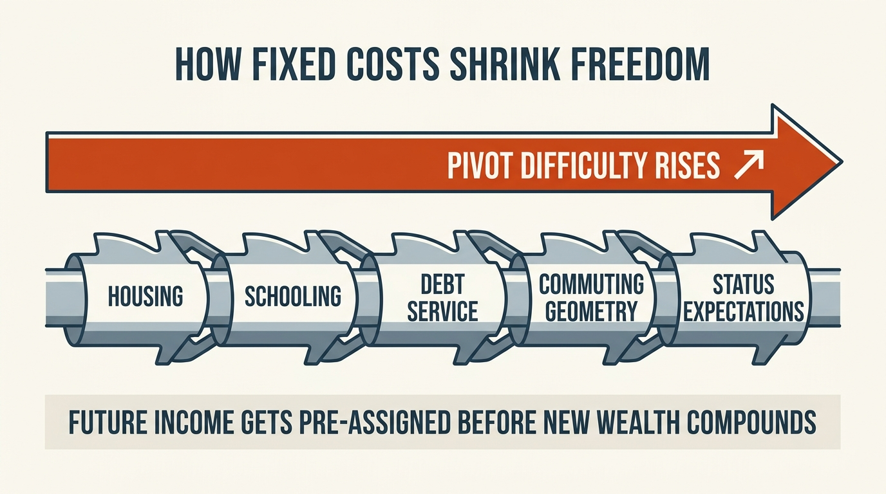

The Lifestyle Lock-In Curve
People usually talk about lifestyle inflation as a spending problem. The deeper problem is structural. Once comfort upgrades turn into recurring obligations, the household stops buying pleasures and starts buying a fixed-cost operating system. That system captures future raises, narrows career choices, and makes reversal harder with each step up the curve.
A nicer apartment is not automatically a trap. Neither is private school, a second car, or a premium neighborhood. The trap emerges when commitments accumulate faster than optionality. At that point the household is no longer choosing freely among future paths. It is servicing a lifestyle configuration that now requires a certain income floor, a certain job stability profile, and a certain tolerance for ongoing pressure.
Core thesis: the lifestyle lock-in curve is the process by which recurring upgrades become progressively harder to reverse. Early steps feel harmless because income can still absorb them. Later steps create a rising fixed-cost base that captures future earnings, weakens bargaining power at work, raises the penalty for experimentation, and converts status or convenience choices into balance-sheet rigidity.

Why This Is A Curve Rather Than A Straight Line
Small upgrades often look linear. A better phone plan, more restaurant spending, a cleaner apartment building, or a slightly more expensive gym can seem like isolated purchases. But recurring commitments stack non-linearly because each new layer reduces the room available for the next shock. Housing, childcare, commuting distance, debt service, insurance, subscriptions, school expectations, and social norms interact. The more of them that harden at once, the steeper the household’s required monthly burn becomes.
The curve steepens further because reversal is social and logistical, not only numerical. Moving down a school district, selling the house, changing peer group, or stepping off a prestige career ladder often feels much more painful than the original upgrade felt pleasurable. That is why lock-in persists even when the household can see the math clearly.
This is the bridge between comparison pressure and asset-level lock-in. Social calibration pushes the household upward. Fixed commitments make the new level hard to unwind.
The Real Cost Is Future Income Capture
The most expensive part of lifestyle escalation is often not the current purchase. It is the claim the purchase places on future income. Once a household needs a certain compensation band to preserve its chosen configuration, career optionality falls. A job that would have been attractive at a lower burn rate becomes impossible. A sabbatical becomes reckless. A startup risk becomes intolerable. A move to a lower-cost city becomes emotionally and institutionally harder.
This is why some high earners remain structurally fragile. Their income is large, but too much of it is pre-assigned. The balance sheet may look successful while the strategic freedom underneath it has quietly deteriorated. The household is richer in visible consumption and poorer in maneuvering room.
That logic overlaps with golden handcuffs, but the mechanism is broader. Handcuffs come from compensation structure. Lifestyle lock-in comes from the household itself building a cost base that requires ongoing performance at a given income tier.
Where Lock-In Usually Starts
Lock-in usually begins where costs feel justified by identity and convenience rather than by explicit return on capital. Better housing seems reasonable because it improves daily life. Better schools seem reasonable because they are linked to children. A more expensive city seems reasonable because it concentrates jobs, peers, and prestige. None of those choices are irrational in isolation. The issue is cumulative. Each one increases the penalty for lower future income or a strategic pivot.
Many households therefore misread the problem. They believe they are choosing quality. In practice they may be choosing a narrower set of acceptable futures.
| Stage | What it feels like | What it does to wealth |
|---|---|---|
| Early upgrade | Comfort rise with little visible stress | Savings rate slips modestly but optionality remains intact |
| Fixed-cost layering | Normalization of a higher burn rate | Raises get captured before balance-sheet resilience improves |
| Identity lock-in | Reversal feels like status loss or family disruption | Household becomes dependent on continued high earnings |
| Strategic rigidity | Pivoting careers or geography feels impossible | Optionality collapses and fragility rises despite high income |
Why Fixed Costs Matter More Than Total Spending
Variable spending can be cut quickly. Fixed spending resists. That is why the lifestyle lock-in curve belongs closer to structural analysis than to budgeting advice. The household with high restaurant spend can reset faster than the household whose obligations sit in mortgage size, school commitments, long commute geometry, luxury-vehicle leases, or care arrangements that require two peak earners just to stay in place.
Fixed costs also transmit stress more aggressively. A weak market, illness, layoff, or lower bonus year can be absorbed if much of spending is optional. The same shock becomes destabilizing when most of the burn is contract-like. That is when the household discovers that what looked like prosperity was actually a high-maintenance operating system.
This is the structural link to The Dual-Income Trap. Two incomes often do not create twice the resilience because the household scales fixed obligations upward until both incomes are required to preserve baseline life.

How Lock-In Changes Career Behavior
The lifestyle lock-in curve often expresses first in work decisions. People stay longer in jobs they do not want, tolerate managers they should leave, avoid skill resets, and reject lower-income transition periods that could have produced better long-run positioning. The household does not look trapped from the outside because consumption remains elevated. The trap is visible in the shrinking set of choices the income earner feels able to make.
This is where the curve touches career optionality. Optionality is not an abstract luxury. It is the ability to change jobs, retrain, relocate, or rebuild before deterioration becomes forced. High fixed-cost lifestyles can consume that option premium long before the household notices.
Social Pressure Makes The Curve Sticky
Lock-in is sustained partly by comparison. Once a household lives at a certain visible level, stepping down can feel like public evidence of failure even if the move would improve long-run resilience. Families therefore defend the structure for social reasons that have nothing to do with actual balance-sheet quality. The result is a subtle but durable refusal to reprice the lifestyle against new market realities.
That is why the curve often survives even after the underlying economics change. Mortgage rates rise. Industry compensation cools. Equity grants become less generous. Commutes worsen. Yet the household continues servicing the old structure because the identity layer attached to it has become stronger than the math.
What A Better Wealth Response Looks Like
The answer is not asceticism. The answer is preserving reversibility. Households should ask whether a lifestyle upgrade raises quality of life without meaningfully increasing the required income floor. They should distinguish fixed costs from variable indulgences, and they should model the effect of one lower-bonus year, one layoff, one move, or one parent reducing work.
- Track fixed-cost ratio, not only total spending.
- Ask what income level is required to maintain the current operating system without asset sales.
- Stress-test whether one career pivot or one city move is still feasible.
- Preserve at least one dimension of reversibility: housing, schooling, commuting, or debt load.
- Treat raises as optionality capital first and lifestyle fuel second.
Bottom Line
The lifestyle lock-in curve is a wealth problem because it captures future income and converts comfort into rigidity. The danger is not that households enjoy better lives. The danger is that the structure underneath those lives becomes so fixed that raises stop increasing freedom and start financing a system that can no longer bend. Durable wealth is not only about what you can afford this year. It is about how many futures remain open after you pay for the life you built.
Stress-test the lifespan side of this balance-sheet story.
Open the matching LifeMeter scenario with a prefilled planning profile so the wealth case and the health-runway case can be read together.